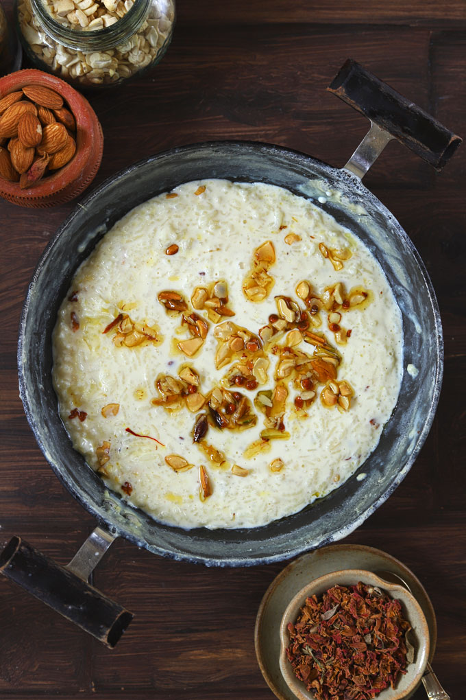

Rice Kheer Recipe is an age-old traditional Indian pudding prepared with three basic ingredients – milk, rice, and sugar. It is a gluten-free kheer with a creamy, melt-in-mouth texture. I am sharing with a tried and tested rice kheer recipe of my family.
Kheer is a creamy, luscious, purely vegetarian Indian milk pudding. One of the most common types of kheer made on every auspicious occasion is the rice kheer. Also, known as chawal ki kheer. ‘Chawal’ is the Hindi term for rice.
In India, we love our desserts, puddings dressed up in vivacious colors, luring perfumes embellished with edible adornment. But opposite to this, rice kheer has an elegant appearance. The fine layer of flavors, the adequate hint of saffron and cardamom perfume, and an uncomplicated air around rice kheer are few good enough reasons to make this pudding an Indian festive favorite dessert.
In my house, most of the gleeful festive mornings are unfolded with a large pot of rice kheer brimming over the stovetop.
The natural starch of the rice and the right condensation of the milk give chawal ki kheer its creamy texture. The addition of slightly crushed green cardamoms instills a subtle aroma in the pudding.
Rinse the rice till the water runs clear. Soak for 20 minutes.
After 20 minutes, drain all the water from the soaked rice. Heat ghee in a pan. Add rice, fry for 3 – 5 minutes to soften the rice.
Add milk, cardamom powder, stir and reduce the heat to the lowest setting. Now, slow cook the kheer till rice is soft, mushy, and the milk is thick.
Once the texture of the kheer turns creamy, add sugar. Stir and simmer the kheer till sugar is completely dissolved.
Heat ghee in a small pan. Add sliced nuts and dried fruits. Fry for 1 – 2 minutes without burning.
Pour these ghee-fried nuts over the rice kheer before serving. They give a delicious crunch to the kheer.